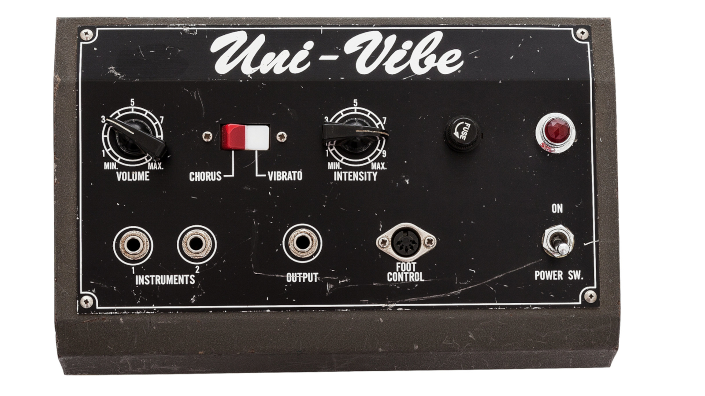

10. She Just Won't Believe Me
Az „Elephant”-ot nehéz megtoppolni, de sajnos ez a szám az ellentétjét tette. Maga a szám zeneileg egész jó, de egyszerűen ez az 1 perc átvezetőnek jó csak.
A legrosszabb az egészben, hogy az album B-oldalán és a Demo-k között voltak jobb, befejezettebb számok, mint a „Led Zeppelin” vagy a Demo Track 2, 4, 9, 10 és 11. Sőt, a 2. és 9. kész számoknak tűnnek. Később 2023-ban kettőt, a 7-et, „Retina Show”-t és a „Sidetracked Soundtrack”-et kiadta mint teljes számok. Ront a helyzeten, hogy sok szám a demók közül fájdalmasan érzelmes volt, és valószínűleg azért nem lettek előbb nyilvánosságra hozva, mert Kevin szégyellte őket.
Visszatérve a számra, ez inkább csak egy kis válasz a „Keep On Lying”-ra. A dal énje nem érti, hogy a lány miért nem hisz neki, annak ellenére, hogy két számmal ezelőtt bevallotta, hogy hazudozik. A narrátor tovább küszködik, azt mondja, hogy ő soha nem verne át senkit, pedig ennek eddig az ellentétét láttuk. Ez a dal is szintén hirtelen végződik, rögtön a következő szám kezdődik.
A szám hátrányai ellenére átvezetőnek jó célt szolgál, az éneklés kellően érzelmes.
A szintetizátor egy Juno-106, amelynek a beépített kórus effektje igen magasra van állítva.
A rövid kis gitárszóló részen a gitáron hall reverb, kórus, tape echo és Uni-Vibe van.
A dalban nincs dob, a basszus teljesen a szintetizátort követi.